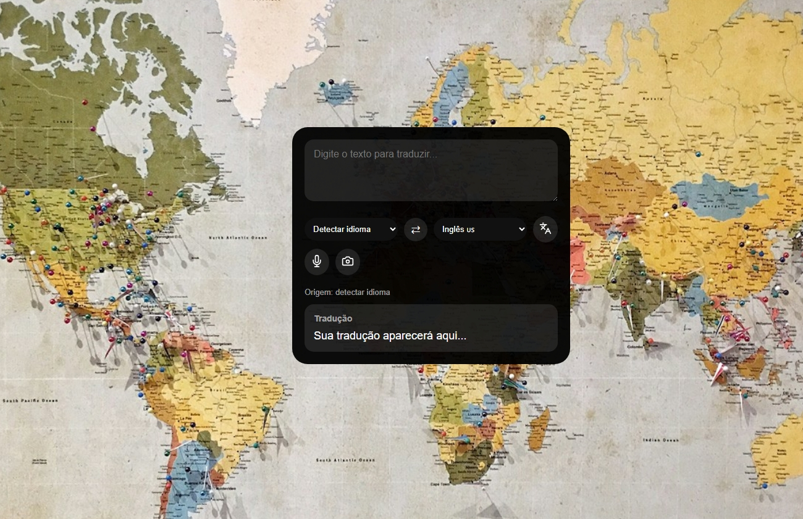

Aplicação Web
Rainen Transtaler
Aplicação web de tradução com suporte a texto, voz, câmera e galeria. Utiliza API de tradução, OCR e JavaScript para oferecer uma experiência prática, moderna e responsiva.
HTML
CSS
JavaScript
API
OCR
Voz
Câmera
Galeria
- Tradução por texto
- Tradução por voz
- Tradução por imagem
- OCR automático
- Upload da galeria
- Captura pela câmera